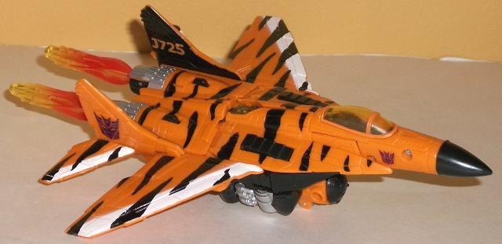
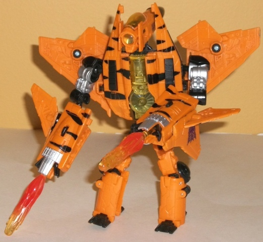
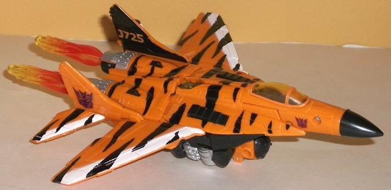
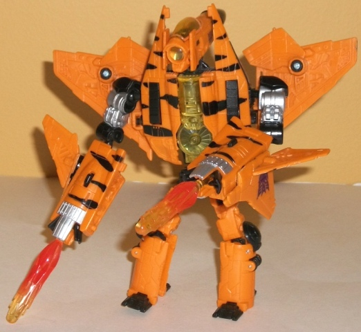
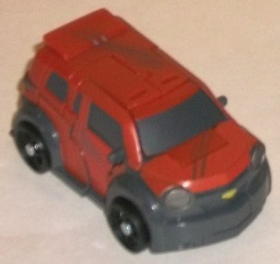
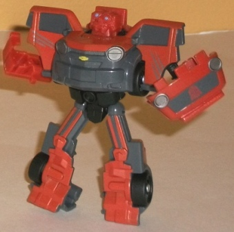
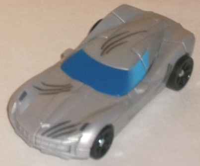
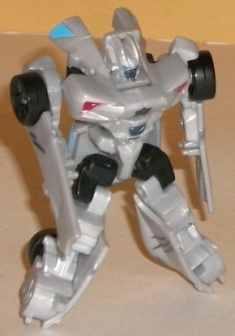

Fearswoop
Fearswoop
 
Allegiance : Decepticon
Size : Deluxe
Difficulty of Transformation : Medium
Color Scheme : Moderately light orange, black, and some silver, white, transparent yellow, and dull orange
Individual Rating: 5.7
The
Fury of Fearswoop (Wal-Mart Exclusive)
Price : $24 U.S.
(NOTE: Because this set is composed of repaints,
this is not a full-blown review. This mainly covers any changes made to
the set and the color scheme, and merely compares it to the original versions
of these molds. For a review on TF1 Dreadwing, the mold used for Fearswoop,
go
here
. For a review on mass-release RotF
Legends Mudflap, the mold used for Mudflap, go
here
.
For a review on mass-release RotF Legends Sideswipe, the mold used for
Sideswipe, go
here
.)
Fearswoop


Allegiance
: Decepticon
Size
: Deluxe
Difficulty of Transformation
: Medium
Color Scheme
: Moderately light orange,
black, and some silver, white, transparent yellow, and dull orange
Individual Rating:
5.7
Fearswoop here is a bit
of a double G2 homage. As far as the color scheme, he's an homage to G2
Hooligan, who has the same orange-with-tiger-stripes color scheme. The
color scheme-- as is usual for a G2 homage-- is a bit loud on a vehicle,
which I suppose at least completes the purpose of catching the eye. The
orange and black go together well, though I think it would've worked well
if the amounts of each were switched. The white goes well with the black,
but not so much with the orange, since the orange is already light. Same
goes for Fearswoop's silver paint apps, which are more apparent in robot
mode. The transparent yellow plastic is also a bit too close to the orange,
and doesn't give off enough contrast to really stand out in robot mode.
The transparent yellow plastic used for the "exhaust missiles" is done
up really nicely, however, with a nice reddish-orange fade pattern that
make them about as close to real plumes of fire that plastic is ever going
to get. The second homage Fearswoop has is his name-- another G2 Decepticon
jet, but with an entirely different color scheme-- which was apparently
trademarked since "Hooligan" was taken.
No mold changes have
been made to RotF Fearswoop.
 Mudflap
Mudflap


Allegiance:
Autobot
Size
: Legend
Difficulty of Transformation
: Very
Easy
Color Scheme
: Dull gray, dull sparkly
pumpkin orange, black, and some silver, pale yellow, and sky blue
Individual Rating
: 6.5
This version of Mudflap is identical to the mass-release Legends version, only with a couple of silver "battle damage" scratch paint apps on his vehicle mode. They look more like cat or claw scratches than actual battle damage, though. Meh.
 Sideswipe
Sideswipe


Allegiance
: Autobot
Size
: Legend
Difficulty of Transformation
: Very
Easy
Color Scheme
: Light milky gray and
some black, dark blue, light sky blue, dark red, dark gray, and dark metallic
bluish gray
Individual Rating
: 7.6
Like with Mudflap, this version of Sideswipe is identical to the mass-release Legends deco, but with "battle damage" scratch paint apps on the vehicle mode (this time dark gray instead of silver, to contrast with the vehicle's colors more). Again, meh.
Overall, The Fury of Fearswoop set is an easy pass for anyone who isn't a diehard G2 fan. Even if you like his loud tiger-stripe color scheme (which I'm not a huge fan of), Fearswoop's mold is one of the worst from the TF1 movie line, and Mudflap and Sideswipe only have a few unconvincing scratch marks to set them apart from their mainline releases. Plus, the set is a bit over-priced at $24 U.S., whereas if you were to buy the same molds individually it would cost you $20-22 U.S., depending upon the store.
Review by Beastbot